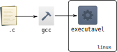

Lab 3 - Compilação usando GCC¶
Ontem fizemos atividades usando um compilador online. Apesar de ser prático, o ambiente online é muito limitado e não é adequado para as atividades do 5 semestre. Esta leitura visa familiarizá-lo com as ferramentas de compilação de código em C usando o compilador gcc. O ambiente recomendado para a atividade é o Ubuntu 18.04 LTS. Outras configurações são possíveis, mas não daremos suporte a elas.
Tip
Memorizar os comandos usados é muito mais fácil de você digitá-los no terminal ao invés de copiar e colar.
Instalação local das ferramentas dos cursos¶
As ferramentas que precisamos para o mutirão estão disponíveis nos pacotes build-essential e gdb. Os pacotes valgrind e kcachegrind serão usados mais para a frente e já podem ser instalados também.
$ sudo apt install build-essential gdb valgrind kcachegrind
Verifique que tudo funcionou rodando o seguinte comando
$ gcc --version
Se você recebeu uma mensagem indicando que está usando a versão 7.4 então tudo está funcionando corretamente.
gcc-7 (Ubuntu 7.4.0-29ubuntu1) 7.3.0
Copyright (C) 2017 Free Software Foundation, Inc.
This is free software; see the source for copying conditions. There is NO
warranty; not even for MERCHANTABILITY or FITNESS FOR A PARTICULAR PURPOSE
Warning
Esta padronização é importante para evitar dores de cabeça com comportamentos específicos de uma certa versão. Assim como o restante do ambiente, é possível que tudo funcine igual com outras versões do gcc. Porém, não daremos suporte a ambientes diferentes do padronizado neste lab.
Praticamente qualquer editor de texto ou IDE suporta colorização para C, porém recomendamos utilizar alguma
ferramenta que também corrija erros de sintaxe. Editores como Visual Studio Code (com plugin para C/C++ e Make) e Eclipse CDT são boas escolhas por serem multi-plataforma e suficientemente completos. Eles também ajudarão muito no começo por indicarem erros simples de sintaxe como esquecer de um ; ou usar scanf sem o &.
Após o mutirão as atividades de Computação Embarcada serão feitas em Windows usando Atmel Studio. Desafios de programação e Sistemas de Hardware e Software continuarão usando Ubuntu Linux.
O quê é "compilar" um código¶
Diferente de Python, em que podemos rodar diretamente o script, ou Java, em que criamos um arquivo binário multi-plataforma, programas em C precisam ser convertidos em instruções nativas do processador para serem executados. Chamamos esse processo que transforma código em instruções executáveis por uma CPU (física ou virtual) de compilação. O resultado final da compilação de um programa em C é um arquivo executável específico para uma arquitetura de CPU e Sistema Operacional.
Veremos mais detalhes de como essa transformação para código de máquina ocorre em Sistemas Hardware-Software.
Compilação (simples) via linha de comando¶
Usamos o comando gcc para compilar programas em C. Para diminuir a quantidade de erros nos programas podemos passar como argumento algumas flags para exibir erros comuns e para fazer somente otimizações que não atrapalhem debug (-Og).
$ gcc -Wall -pedantic -std=gnu99 -Og -o executavel arquivo.c
-Wall: habilita todos avisos do compilador. Este modo indica possíveis erros cometidos no programa.-pedantic: modo de compilação mais estrito e mostra ainda mais avisos-std=gnu99: versão da linguagem C usada (C99) mais extensões para sistemas POSIX GNU (veremos o quê isto significa mais para frente).-Og: somente aplicar otimizações que não atrapalham debuging.-o: output -- nome do executável gerado
Usando este comando podemos compilar um programa definido em um único arquivo .c.

Example
Compile o arquivo printf.c usando o gcc e nomeie o executável exemplo0. Rode ele e verifique que tudo continua funcionando.
Example
Crie um programa que lê dois inteiros do terminal e determina se o primeiro é múltiplo do segundo. Se o segundo número passado for 0 seu programa deverá mostrar uma mensagem de erro.
Example
Adapte seu programa acima para que ele receba vários pares de números e só pare de ser executado quando receber o par "0 0".
Facilitando o uso da entrada e saída padrão¶
Para interagir com nossos programas precisamos digitar valores e strings no terminal. Isto se torna chato e repetitivo bem rápido. Para facilitar podemos utilizar o recurso de redirecionamento de entrada do terminal. Veja o exemplo abaixo.
$ ./prog < arquivo_entrada.txt
O programa prog será executado como se o conteúdo do arquivo arquivo_entrada.txt tivesse sido digitado no terminal. Assim, podemos testar facilmente programas como o criado na Tarefa 3 acima sem precisar digitar sempre a mesma entrada.
Example
Crie um arquivo de entrada para o programa da tarefa 3 e verifique que o resultado do programa é o mesmo que quando você digita manualmente os valores no terminal.
Example
O mesmo vale para a saída, mas usando o caractere >. Capture a saída do programa da tarefa 3 para um arquivo de nome saida3.txt.
Example
Podemos combinar o redirecionamento de entrada e saída no mesmo comando. Teste esta funcionalidade usando o programa da tarefa 3.